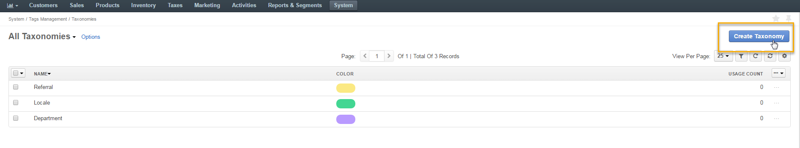
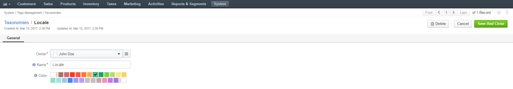
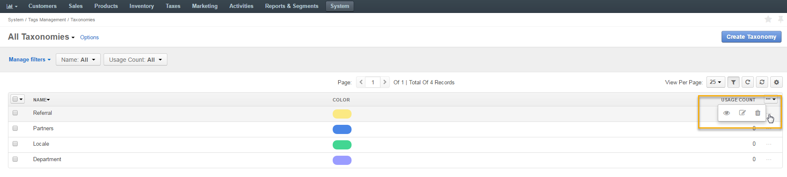
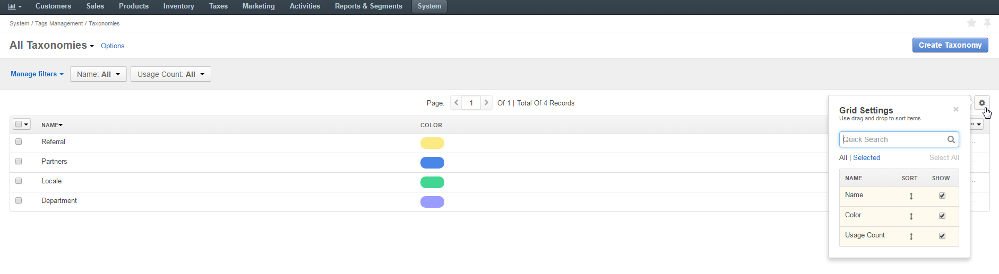

Taxonomies¶
Overview¶
The following guide describes how you can configure taxonomies in your Oro application which located under System > Tag Management > Taxonomies in the main menu.

Taxonomy is a way to group things together. In your Oro application, you can group tags in taxonomies, and to every taxonomy you can assign a distinctive color to clearly identify different groups of tags that might serve different purposes.
Note
See a short demo on how to create taxonomies, or continue reading the guidance below.
Create Taxonomy¶
Once you have reached the Taxonomies page, you can create a new taxonomy by clicking Create Taxonomy in the top right corner.
Next, define the following fields:
| Field | Description |
|---|---|
| Owner | Limits the list of users who can manage the taxonomic unit. |
| Name | Specify the name for your taxonomic unit. |
| Color | Select the color for the taxonomic unit. Tags within this unit will have the same color assigned to them. |
Click Save and Close when you are done.
Manage Taxonomies From the Taxonomies List¶
Within the taxonomies list, you can:
View the details of a taxonomic unit:
Edit a taxonomic unit:
Delete a taxonomic unit from the system:
Filter taxonomies:
Configure grid settings for taxonomies:
 